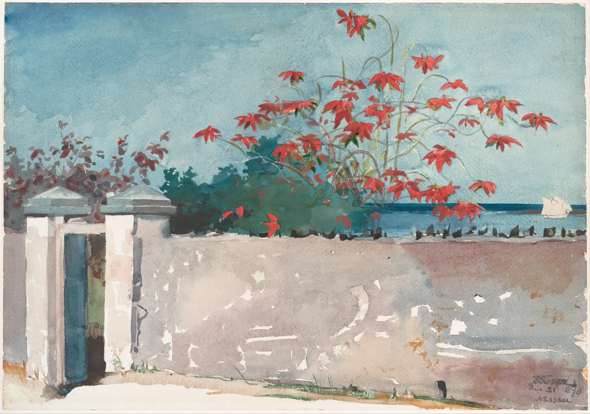
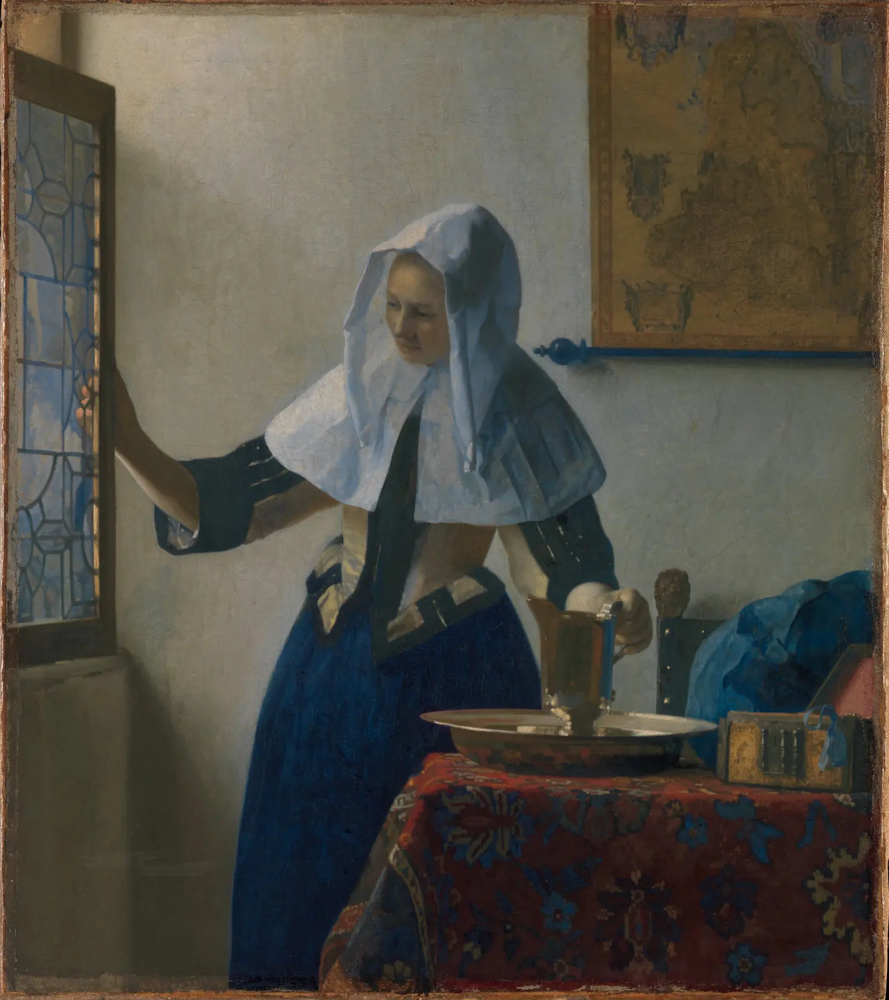

열두 장 동안 사진을 한 손잡이씩 따로 돌려 봤다. 조리개와 셔터, 히스토그램, 빛의 방향, 초점거리, 심도, 화소, 색 보정, 압축. 그런데 실제로 사진 한 장을 다듬을 때는 이 손잡이들이 한꺼번에 움직인다. 노출을 올리면 히스토그램이 오른쪽으로 밀리고, 화이트 밸런스를 바꾸면 한 채널이 먼저 넘치고, 커브를 세우면 파일이 커지고, 자르면 인쇄할 수 있는 크기가 줄어든다. 이 장은 그 손잡이들을 한 화면에 모은 도구다. 사진 한 장을 넣고 노출, 화이트 밸런스, 레벨과 커브, 채도, 크롭, 리사이즈, JPEG 품질을 차례로 정하면서, 히스토그램과 클리핑 경고와 파일 크기가 어떻게 따라 움직이는지 본다. 실험실은 정답을 주지 않는다. 대신 "이 보정이 무엇을 얻고 무엇을 버렸는가"를 숫자와 그림으로 보여 준다.
보정의 각 단계가 화소 값에 하는 일을 순서대로 말하고, 순서가 결과를 바꾸는 이유를 안다.
RGB 히스토그램과 휘도 히스토그램을 함께 읽고, 한 채널만 먼저 넘치는 클리핑을 찾아낸다.
노출 보정이 선형광에 2의 거듭제곱을 곱하는 일이며, 8비트로 잘린 하이라이트는 되돌릴 수 없다는 것을 확인한다.
회색 스포이트로 화이트 밸런스를 맞추고, 레벨·커브·채도를 끝까지 밀었을 때 무너지는 모습을 본다.
크롭 비율과 출력 크기에서 인쇄 해상도를, JPEG 품질에서 파일 크기를 계산하고 용도에 맞게 고른다.
실험실 사용법
사진 보정 프로그램의 슬라이더는 수십 개지만, 화소 하나에게 일어나는 일은 몇 단계뿐이다. 실험실은 그 단계를 고정된 순서로 밟는다. 화소의 sRGB 값을 빛의 양에 비례하는 값(선형광(Linear light), 감마를 풀어 실제 빛의 세기에 비례하게 만든 값)으로 풀고, 그 상태에서 화이트 밸런스와 노출을 곱한다. 다시 화면용 값으로 묶은 뒤 레벨과 커브로 밝기의 배분을 바꾸고, 채도를 조정하고, 자르고 줄이고, 마지막으로 JPEG이나 WebP로 압축한다. 8장의 감마 인코딩, 9장의 보정, 10장의 압축이 이 한 줄에 모두 들어 있다.
그림 1. 실험실의 처리 순서. 위쪽의 곱하는 단계는 빛의 양에 비례하는 값에서 한다. 실제로 빛이 두 배가 되면 센서에 쌓이는 전하도 두 배가 되기 때문이다. 아래쪽의 배분하는 단계는 화면에 보낼 값에서 한다. 사람이 "밝기의 배분"을 느끼는 방식이 감마 값에 더 가깝기 때문이다. 두 단계 사이에서 값이 0~255로 잘린다. 여기서 잘린 정보는 뒤 단계가 되살리지 못한다.
사진은 다섯 가지 중에서 고르거나 직접 넣는다. 셋은 이 책이 캔버스로 직접 그린 가상의 장면이다. 낮의 책방 창가(창은 하얗게 날아가고 실내는 전구 빛에 누렇다. 1장에서 서윤이 휴대폰 자동 모드로 찍은 첫 사진을 흉내 냈다), 밤의 서가(어둡고 노이즈가 많다), 그리고 작품 촬영이다. 작품 촬영은 공공 도메인 수채화인 윈슬로 호머의 「나소의 담」을 서윤의 도록 작품 대신 놓고, 백열등 아래에서 회색 카드와 함께 어둡고 누렇게 찍힌 상황을 모형으로 만든 것이다. 넷째는 박물관이 찍어 공개한 페르메이르의 「물병을 든 젊은 여인」 사진이다. 내 사진 열기로 고른 파일은 이 브라우저 안에서만 읽는다(URL.createObjectURL). 어디에도 올리지 않으며 페이지를 닫으면 사라진다.
실험실이 다루는 것은 이미 한 번 해석된 파일이다
실험실은 브라우저가 화면에 그리려고 준비한 8비트 sRGB 값을 고친다. 카메라의 RAW가 아니다. JPEG은 카메라가 이미 화이트 밸런스와 톤 커브를 한 번 적용하고 남은 값만 저장한 것이라서(8장), 여기서 하는 보정은 RAW 현상 프로그램보다 여유가 훨씬 적다. 날아간 하이라이트는 이 실험실에서도 돌아오지 않는다. 그리고 화면의 색은 기기마다 다르다. 색이 중요한 판단은 실물 옆에서, 가능하면 보정된 모니터에서 한다.
먼저 원본을 읽는다. 히스토그램(Histogram)은 화소 값 0~255마다 그 값을 가진 화소가 몇 개인지 센 막대그래프다(3장). 실험실은 두 가지를 보여 준다. RGB 히스토그램은 빨강·초록·파랑 채널을 따로 센다. 휘도 히스토그램은 화소마다 세 채널을 사람 눈의 민감도로 가중해 합친 밝기 하나를 센다. 아래 그림을 누르거나 끌면 그 화소의 세 값이 히스토그램 위에 세로선으로 표시된다.
SIMULATOR
원본 읽기: RGB와 휘도 히스토그램
사진을 눌러 화소를 집는다
파일은 이 브라우저 안에서만 읽는다. 서버로 보내지 않는다.
집은 화소 R·G·B—
그 화소의 휘도 · L*—
하이라이트 클리핑—
그림자 클리핑—
해볼 것: ① 창가 사진에서 창을 누른다. 세 채널이 모두 255다. 원래는 하늘과 건너편 건물이 있던 자리인데 숫자가 하나로 뭉개졌다. RGB 히스토그램의 오른쪽 끝에 세 채널의 막대가 벽처럼 서 있다. ② 실내의 흰 찻잔을 누른다. 흰색인데 R이 B보다 한참 크다. 전구 빛이 남긴 색 치우침이다. 히스토그램에서도 파랑 채널만 왼쪽에 떨어져 있다. ③ "휘도"로 바꾼다. 파랑이 어두운 쪽에 몰려 있던 모습이 휘도에서는 거의 보이지 않는다. 휘도 히스토그램은 파랑에 가중치를 7%만 주기 때문이다. 한 채널의 클리핑은 RGB로 봐야 보인다. (휘도는 선형광에서 Rec. 709 계수 0.2126·0.7152·0.0722로 합친 뒤 다시 감마 값으로 바꾼 것이다. 하이라이트 클리핑은 한 채널이라도 255인 화소, 그림자 클리핑은 세 채널이 모두 2 이하인 화소의 비율이다.)
RGB 히스토그램과 휘도 히스토그램은 서로 다른 질문에 답한다. 휘도는 "사진이 전체로 밝은가 어두운가"에, RGB는 "어느 채널이 먼저 한계에 닿았는가"에 답한다. 노랗게 찍힌 사진은 휘도로 보면 멀쩡해도 빨강 채널이 이미 255에 붙어 있을 수 있다. 그 상태에서 노출을 올리면 빨강만 먼저 잘리고, 밝은 부분의 색이 노랗게 틀어진다. 그래서 실험실의 모든 조정은 두 히스토그램을 함께 보며 한다.
노출: 빛의 양에 2를 곱하는 일
2장에서 노출을 한 스톱(Stop) 올리면 센서에 들어오는 빛이 두 배가 된다고 했다. 보정 프로그램의 노출 보정(Exposure compensation) 슬라이더도 같은 일을 흉내 낸다. 단위는 EV(Exposure value)이고, +1 EV는 빛의 양을 두 배로, −1 EV는 절반으로 한다는 뜻이다. 중요한 것은 이 곱셈을 화면 값이 아니라 선형광에 해야 한다는 점이다.
$$c_{\text{후}} = c_{\text{전}}\times 2^{\,\mathrm{EV}}\qquad(c\text{는 선형광, 결과가 1을 넘으면 1로 잘린다})$$
\(c\): 채널 값을 감마를 풀어 0~1의 빛의 양으로 바꾼 것. +1 EV는 ×2, +2 EV는 ×4, −1 EV는 ×0.5다. 이 책의 모델로 계산하면 화면 값 118(18% 회색, L* 50 근처)에 +1 EV를 하면 화면 값은 236이 아니라 161이 된다. 선형광 0.18이 0.36이 되고, 그것을 다시 감마로 묶기 때문이다.
곱셈 자체는 되돌릴 수 있다. ×4를 하고 ÷4를 하면 원래 값이다. 문제는 그 사이에 값이 저장 형식의 한계에 부딪힐 때다. 8비트 파일은 0~255밖에 담지 못하므로, ×4를 해서 1을 넘은 값은 모두 1(255)로 잘린다. 잘린 다음에 ÷4를 하면 원래 서로 달랐던 밝은 값들이 모두 같은 회색이 된다.
그림 2. 잘린 것은 돌아오지 않는다. 가로축은 원래 빛의 양, 세로축은 결과다(둘 다 선형광, 점선은 아무것도 하지 않았을 때). 왼쪽: ×4를 하면 원래 0.25보다 밝던 값이 모두 1에 붙는다. 오른쪽: 그 파일에 ÷4를 하면 그 값들은 모두 0.25로 내려올 뿐 원래 차이를 되찾지 못한다. 반대로 어두운 쪽을 ÷4로 줄였다가 ×4로 되돌리면, 잘리지는 않지만 8비트의 단계가 네 배로 성글어져 그림자에 계단이 생긴다.
아래 시뮬레이터의 경계선 왼쪽은 원본, 오른쪽은 보정한 결과다. 노출 슬라이더를 움직이고, "8비트로 저장했다가 되돌리기"를 켜서 그림 2의 실험을 실제 사진에 해 본다.
SIMULATOR
노출 보정과 되돌릴 수 없는 클리핑
하이라이트 클리핑—
그림자 클리핑—
중앙 휘도 값 전→후—
되돌린 뒤 달라진 화소—
해볼 것: ① 밤 서가는 +1.5 EV에서 처음으로 서가의 책등이 읽힌다. 그런데 어두운 곳의 얼룩도 같이 밝아진다. 노이즈는 보정이 만든 것이 아니라 원래 있던 것이 드러난 것이다(8장). 전구 둘레는 빨갛게 표시되며 넘친다. ② +3 EV까지 올린 뒤 "8비트로 저장했다가 되돌리기"를 켠다. 노출은 원래대로 돌아왔는데 전구 둘레와 밝은 책등이 납작한 회색으로 남는다. 그 화소들은 되돌아오지 못했다. ③ 창가 사진에서 −3 EV까지 내린다. 창은 어두워지지만 하늘이 생기지 않는다. 255에 붙었던 화소는 모두 같은 회색이 될 뿐이다. 날아간 하이라이트는 노출을 내려도 돌아오지 않는다. (곱셈은 선형광에서 하고, 결과는 8비트로 자른다. "되돌린 뒤 달라진 화소"는 원본과 어느 채널이든 3단계 넘게 다른 화소의 비율이다.)
그래서 사진가들은 "하이라이트를 지켜라"라고 말한다. 어두운 부분은 나중에 밝히면 노이즈가 늘어나는 값을 치르지만 형태는 남아 있다. 날아간 하이라이트에는 형태가 없다. 3장에서 창가 사진의 노출 기준을 정할 때 이 비대칭이 판단의 근거였다. 물론 예외도 있다. 창밖을 보여 줄 생각이 없고 창이 그저 하얀 빛의 면이면 충분한 사진이라면, 창이 날아가는 것은 실패가 아니라 선택이다.
왜 노출은 선형광에서 곱해야 하는가
sRGB 값은 빛의 양을 그대로 적은 것이 아니라, 대략 2.2제곱근을 씌워 어두운 쪽에 단계를 더 많이 배정한 값이다(IEC 61966-2-1). 그래서 화면 값에 바로 2를 곱하면, 어두운 화소는 빛이 두 배보다 훨씬 많이(약 4.6배) 늘고 밝은 화소는 금방 255에 닿는다. 결과는 "밝아진 사진"이라기보다 "대비가 이상해진 사진"이다. 선형광으로 풀어서 곱하면 모든 화소의 빛이 같은 비율로 늘어난다. 실제 카메라에서 셔터를 한 스톱 길게 열었을 때와 같은 결과다. 다만 JPEG에는 카메라가 이미 톤 커브를 씌워 두었기 때문에, sRGB 감마만 풀어서는 장면의 빛과 정확히 비례하지 않는다. 실험실의 노출은 그 차이를 무시한 근사다.
화이트 밸런스: 무엇을 회색으로 볼 것인가
전구 아래에서 찍은 사진이 누런 것은 전구 빛에 빨강과 초록이 많고 파랑이 적기 때문이다. 눈은 그 빛에 금세 순응해서 흰 종이를 희게 보지만, 카메라는 누가 알려 주지 않으면 그 빛의 색을 그대로 적는다(ColorBook 10장). 화이트 밸런스(White balance)는 "이 사진은 몇 K의 빛 아래에서 찍혔다"고 알려 주고, 그 빛 아래의 흰색이 화면의 흰색이 되도록 채널마다 다른 비율을 곱하는 일이다. 실험실의 색온도 슬라이더는 그 빛의 색온도이고, 색조(Tint)는 색온도 축과 직각인 초록↔자홍 방향의 치우침이다. 형광등이나 일부 LED가 초록 쪽으로 치우친 빛을 낸다.
슬라이더로 맞추는 것보다 확실한 방법은 장면 안에 원래 회색인 물건을 두는 것이다. 회색 카드(Gray card)는 모든 파장을 고르게 반사하도록 만든 회색 판이다. 사진 속 회색 카드의 R, G, B가 같아지도록 채널 비율을 정하면 그 빛의 색이 지워진다. 아래 그림에서 원래 회색이어야 할 곳을 누르면 실험실이 그 화소가 회색이 되는 색온도와 색조를 찾아 슬라이더를 옮긴다.
SIMULATOR
회색 스포이트와 화이트 밸런스
회색이어야 할 곳을 누른다
집은 곳 보정 전—
집은 곳 보정 후—
남은 치우침 (OKLCH C×100)—
한 채널이라도 255—
해볼 것: ① 작품 촬영에서 그림 아래 회색 카드의 가운데 칸(18% 회색)을 누른다. 색온도가 3,200 K 근처, 색조가 +12 근처로 옮겨 가며 누런 기가 빠지고 수채화의 바다가 푸르게 돌아온다. 이 모형은 3,200 K 전구 빛에 초록 기를 조금 섞어 만들었다. 스포이트가 그 값을 거의 그대로 되찾는다. ② 이번에는 회색 카드 대신 수채화의 흰 담벼락을 누른다. 결과가 조금 다르다. 종이는 미색이고 물감이 얇게 덮여 있어서 "원래 회색"이 아니기 때문이다. 무엇을 회색으로 볼지 고르는 것이 화이트 밸런스의 전부다. ③ 창가 사진의 찻잔을 눌러 실내를 맞춘다. 실내는 자연스러워지지만 창 가장자리, 아직 255가 아닌 하늘 부분이 파랗게 변한다. 전구 빛과 창의 햇빛, 두 빛이 섞인 장면은 한 번의 화이트 밸런스로 둘 다 맞출 수 없다. (색온도는 흑체 백색점 사이의 브래드퍼드 색순응을 선형광 3×3 행렬로 적용한 것이다(ART.whiteBalance). 6,500 K가 "보정 없음"이다. 색조는 초록 채널의 비율을 바꾸는 이 책의 단순 모형이다.)
스포이트가 찾는 값은 "그 화소를 회색으로 만드는 값"이지 "옳은 값"이 아니다. 회색 카드를 누르면 빛의 색이 지워지고, 미색 종이를 누르면 종이의 미색까지 지워진다. 노을 사진의 하늘을 누르면 노을이 사라진다. 그래서 작품을 찍을 때는 그림 옆에 회색 카드를 같이 찍은 컷을 한 장 남기고, 서점의 저녁 사진처럼 따뜻한 빛 자체가 분위기인 장면에서는 일부러 색을 다 지우지 않는다. 화이트 밸런스도 기록인지 표현인지를 먼저 정해야 하는 선택이다.

그림 3. 윈슬로 호머, 「나소의 담」, 1898. 박물관이 표준 조명과 색 기준표로 찍어 공개한 사진이다. 실험실의 "작품 촬영"은 이 사진을 원본으로 두고, 백열등 아래에서 회색 카드와 함께 어둡고 누렇게 찍힌 것처럼 바꿔 만든 모형이다. 수채화는 종이의 흰색이 그림의 가장 밝은 색이라서, 화이트 밸런스와 노출이 조금만 어긋나도 담벼락의 흰색과 바다의 파랑이 함께 무너진다.메트로폴리탄 미술관, 미색 종이에 수채와 흑연. 공공 도메인(The Met Open Access, CC0). 소장처 작품 페이지 · 크레딧
작품 촬영의 첫 컷은 회색 카드다
작품 사진을 찍는 사람들은 조명과 카메라를 고정한 뒤 첫 컷에 회색 카드(또는 색 기준표)를 작품 자리에 놓고 찍는다. 그다음부터는 같은 설정으로 작품만 바꿔 찍는다. 보정할 때는 첫 컷에서 스포이트로 구한 화이트 밸런스와 노출을 모든 컷에 똑같이 붙여 넣는다. 작품마다 따로 맞추면 그림의 색 자체가 "회색"으로 끌려가기 때문이다. 붉은 그림은 덜 붉게, 푸른 그림은 덜 푸르게. 그리고 마지막 확인은 화면이 아니라 실물 옆에서 한다. 실물과 모니터를 나란히 두고, 차이가 있으면 어느 쪽으로 틀어졌는지 적는다.
레벨과 커브: 밝기를 다시 나누기
노출이 모든 빛에 같은 비율을 곱한다면, 레벨(Levels)과 커브(Curves)는 밝기마다 다른 양을 더하고 빼서 밝기의 배분을 바꾼다. 레벨은 세 숫자로 정한다. 검정점보다 어두운 값은 모두 0으로, 흰점보다 밝은 값은 모두 255로 보내고, 그 사이를 다시 0~255로 늘린다. 가운데 값(감마)은 늘린 범위 안에서 중간톤을 밝게 또는 어둡게 기울인다.
$$v_{\text{후}} = 255\times\left(\frac{v-b}{w-b}\right)^{1/\gamma}\qquad(0\text{~}1\text{ 밖은 잘라 낸다})$$
\(v\): 화면 값 0~255, \(b\): 검정점, \(w\): 흰점, \(\gamma\): 중간톤(1이면 직선). 이 책의 모델로 계산하면 \(b=20,\ w=235\)일 때 원래 20~235의 216단계가 0~255의 256칸에 나뉘어 들어가므로, 40칸쯤은 아무 화소도 받지 못하고 비게 된다.
커브는 레벨을 일반화한 것이다. 가로축이 입력 값, 세로축이 출력 값인 곡선을 그리고, 모든 화소를 그 곡선대로 옮긴다. 가운데를 위로 올리면 중간톤이 밝아지고, 그림자 쪽을 내리고 하이라이트 쪽을 올린 S자 곡선은 대비를 키운다. 곡선이 가파른 구간에서는 원래 가까웠던 값들이 멀어지고(대비가 커지고), 완만한 구간에서는 서로 붙는다(대비가 줄어든다). 커브는 대비를 만들어 내지 않는다. 한 구간에 대비를 주면 다른 구간에서 그만큼 빼 온다.
아래 시뮬레이터 아래쪽 그래프의 세 점(입력 25%, 50%, 75%)을 위아래로 끌어 커브를 만든다. 그래프 뒤의 회색 막대는 결과의 R·G·B 세 채널 히스토그램을 더한 것이다. 레벨의 검정점과 흰점을 좁혀 대비를 크게 늘리면 히스토그램이 어떻게 변하는지 본다.
SIMULATOR
레벨과 커브, 그리고 빗살 히스토그램
곡선의 세 점을 끈다
결과에 쓰인 값(RGB 합)—
사이의 빈 칸(빗살)—
휘도 범위 5~95%—
클리핑 하이·그림자—
해볼 것: ① 페르메이르에서 "S자"를 고른다. 창과 두건은 더 밝고, 벽 아래와 탁자 그림자는 더 어두워진다. 휴대폰 사진 앱의 "선명하게"가 대개 이런 곡선이다. ② 검정점을 60, 흰점을 180으로 좁힌다. 대비는 세지지만 히스토그램이 빗처럼 이가 빠진다. 원래 121단계였던 값을 256칸에 나눠 넣었기 때문이다. 빈 칸이 많아질수록 하늘이나 벽처럼 고른 면에 띠(밴딩)가 생기기 쉽다. ③ "뒤집기"를 고른다. 곡선이 오른쪽 아래로 내려가면 사진이 음화가 된다. 곡선이 한 곳에서라도 내려가면 그 구간의 밝기 순서가 뒤집힌다. (레벨은 감마 값에서 계산하고, 곡선은 입력 0·25·50·75·100%의 다섯 점을 지나는 단조 3차 보간(Fritsch, Carlson 1980)이다. 결과는 8비트로 반올림한다.)
빗살 히스토그램은 8비트 보정의 흔적이다. 값을 늘리는 보정은 정보를 만들지 못하고, 있던 단계를 벌려 놓을 뿐이다. 그래서 대비를 크게 바꿀 사진은 비트 깊이가 큰 RAW나 16비트 파일에서 보정하고, 마지막에 한 번만 8비트로 내보낸다. 실험실은 일부러 모든 단계를 8비트로 반올림해서 그 흔적이 보이게 했다.

그림 4. 요하네스 페르메이르, 「물병을 든 젊은 여인」, 1662년경. 창가 실내는 사진가에게 가장 어려운 장면 중 하나다. 실제 창밖과 방 안쪽의 밝기 차이는 카메라 한 장의 다이내믹 레인지를 쉽게 넘는다(3장). 그런데 이 그림에서는 창유리도, 흰 두건도, 벽의 가장 밝은 곳도 날아가지 않았다. 화가는 장면의 밝기를 그대로 옮기지 않고, 창은 덜 밝게, 그림자는 덜 어둡게 눌러 물감의 범위 안에 넣었다. 커브로 하는 일을 손으로 한 셈이다.메트로폴리탄 미술관, 캔버스에 유채. 공공 도메인(The Met Open Access, CC0). 소장처 작품 페이지 · 크레딧
규칙이 깨지는 쪽도 보자. 히스토그램이 양 끝에 닿지 않으면 "대비가 부족하다", 끝에 닿아 넘치면 "클리핑이다"라는 판정은 기록 사진의 기준이다. 안개 낀 아침 사진은 히스토그램이 가운데에만 모여 있어야 안개답고, 흰 눈밭이나 하얀 종이 위의 정물을 일부러 밝게 띄운 하이키(High key) 사진은 오른쪽 끝에 일부가 닿아도 괜찮다. 레벨을 자동으로 맞추는 버튼은 히스토그램을 양 끝까지 늘려 버리므로, 안개와 하이키를 먼저 지운다. 히스토그램은 판정이 아니라 지금 상태의 기록이다.
채도: 어디까지 밀 수 있는가
채도(Saturation) 슬라이더는 화소마다 같은 밝기의 회색에서 얼마나 떨어져 있는지를 늘리거나 줄인다. 실험실은 선형광에서 화소의 휘도 \(Y\)를 구하고, 각 채널을 \(Y\)로부터의 거리만큼 비율로 밀어낸다. 0%면 같은 휘도의 회색(흑백 보기와 같다), 100%면 그대로, 200%면 회색에서 두 배 멀어진다. 밝기는 그대로 두고 색만 늘리는 방법이다. 그런데 화면이 낼 수 있는 색에는 끝이 있다. 이미 선명한 빨강을 더 밀면 빨강 채널은 255를 넘고 초록·파랑은 0 아래로 내려가려 한다. 넘친 값은 잘리고, 잘린 화소는 밝기와 색상이 함께 틀어진다.
SIMULATOR
채도와 색역의 끝
색역을 넘어 잘린 화소—
평균 채도 C×100 전→후—
가장 선명한 5% C×100—
해볼 것: ① 창가 사진을 160%로 올린다. 서가의 빨간 책등과 화분 잎이 먼저 줄무늬로 덮인다. 원래 선명했던 색부터 넘친다. 전구 빛에 누렇게 찍힌 벽은 더 누래진다. 채도는 색 치우침도 함께 키우므로 화이트 밸런스를 먼저 맞춰야 한다. ② 300%까지 올린다. 넘친 화소의 비율이 크게 늘고, 책등의 무늬와 결이 같은 색 한 덩어리로 뭉친다. 채널이 잘리면 같은 채널 안의 차이가 사라지기 때문이다. ③ 0%로 내리면 흑백 보기와 같은 회색이 된다. 휘도를 지키는 방법이라서 밝은 노랑과 어두운 파랑이 서로 다른 회색으로 남는다. (채도는 선형광에서 Rec. 709 휘도 Y를 축으로 c′ = Y + s(c − Y). 0~1 밖으로 나간 채널은 잘라 낸다. 평균 채도는 OKLCH C를 표본 화소로 잰 값이다.)
사진 앱들은 채도 옆에 생동감(Vibrance)이라는 슬라이더를 함께 둔다. 이미 선명한 색은 덜, 탁한 색은 더 올려서 넘침을 줄이는 방법이다. 계산법은 프로그램마다 다르고 공개되지 않은 경우가 많아 실험실에는 넣지 않았다. 원리는 같다. 색역의 끝에 가까운 화소일수록 조금만 밀어도 넘친다. 그리고 넘친 사진은 화면에서는 화려해 보여도, 화면보다 색역이 좁은 인쇄에서는 더 크게 틀어진다(ColorBook 15장).
크롭과 리사이즈: 화소 수를 정하기
보정이 끝나면 화소 수를 정한다. 크롭(Crop)은 사진의 일부만 남기는 일이고, 남긴 부분의 화소 수가 그 사진이 가진 정보의 전부가 된다. 11장에서 자르기는 구도의 문제였다. 여기서는 같은 자르기를 숫자로 본다. 1,600×1,067 px 사진을 4:5로 자르면 853×1,067 px이 남는다. 이것을 인쇄하면 몇 cm까지 선명할까. 인쇄에서는 종이 1인치(2.54 cm)에 몇 화소를 넣는지를 ppi(pixels per inch)로 적는다. 사진 인쇄에서 흔히 쓰는 기준이 300 ppi다(10장). 이 기준은 관례이고, 멀리서 보는 포스터는 훨씬 낮아도 된다.
용도
크기
300 ppi에 필요한 화소
비고
도록 한 쪽 가득(A5)
148 × 210 mm
1,748 × 2,480
도련(재단 여유)을 두면 조금 더 필요하다
도록 안 작품 사진
110 × 150 mm 안쪽
1,299 × 1,772
여백 있는 판면 기준의 예
웹 본문 이미지
가로 1,600 px
—
화면은 ppi가 아니라 화소 수로 정한다
아래 그림에서 틀 안쪽을 끌면 틀이 옮겨 가고, 오른쪽 아래 손잡이를 끌면 비율을 지킨 채 크기가 바뀐다. 틀 안의 가는 선은 3분할 격자다.
SIMULATOR
크롭 비율과 인쇄 가능한 크기
틀을 끌고, 귀퉁이로 크기를 바꾼다
남은 화소—
300 ppi로 인쇄하면—
A5 한 쪽 가득 채우면—
남긴 면적—
해볼 것: ① 창가 사진을 4:5로 가장 크게 자른다. 853×1,067 px, 300 ppi로 7.2×9.0 cm다. 손바닥만 한 크기다. ② 귀퉁이를 끌어 틀을 절반 폭으로 줄인다. 면적은 4분의 1이 되고 인쇄 크기는 가로세로 절반이 된다. 크롭은 줌과 같지만 화소를 새로 얻지 못한다(5장). ③ A5를 고른다. 1,600 px 사진은 A5 한 쪽을 가득 채우면 200 ppi에도 못 미친다. 도록 한 쪽을 사진으로 채우려면 처음부터 더 큰 화소로 찍어야 한다. 실험실의 그림 원본들은 웹용으로 긴 변 1,600 px만 남긴 것이다. (인쇄 크기 = 화소 ÷ ppi × 2.54 cm. A5는 148×210 mm, 도련은 계산에 넣지 않았다.)
크롭 다음은 리사이즈(Resize)다. 화소 수를 줄이는 것은 정보를 버리는 대신 파일을 가볍게 한다. 늘리는 것은 정보를 만들지 못한다. 화소 사이를 보간해서 채울 뿐이라 크게 보면 부드럽게 뭉개진다(10장). 그래서 리사이즈는 언제나 마지막 용도에 맞춰 한 번만 하고, 원본은 줄이지 않은 채 따로 보관한다.
JPEG 품질과 파일 크기
마지막 단계는 압축이다. JPEG은 사진을 8×8 화소 블록으로 나누고, 블록마다 밝기 변화를 주파수 성분으로 바꾼 뒤(이산 코사인 변환), 눈에 덜 띄는 고주파 성분을 거칠게 반올림해 버리는 방식이다(ITU-T T.81, 1992). 품질 값은 그 반올림을 얼마나 거칠게 할지 정한다. 실험실은 브라우저에 들어 있는 인코더(canvas.toDataURL("image/jpeg", 품질))로 실제로 압축하고, 결과 파일의 바이트 수를 잰다. 아래 위쪽 그림은 압축된 결과, 가운데 두 칸은 네모 틀 안을 4배로 확대한 원본과 결과다. 네모 틀은 끌어서 옮긴다.
SIMULATOR
품질, 블록, 파일 크기
네모 틀을 끈다
압축은 이 브라우저의 인코더로 한다. 브라우저마다 결과 크기가 조금씩 다르다.
파일 크기—
화소당 비트—
압축하지 않은 크기 대비—
오차 PSNR—
해볼 것: ① 창가 사진에서 품질을 0.8에서 0.6, 0.4로 내린다. 파일은 크게 줄지만 결과 사진은 거의 그대로다. 아래 그래프에서 곡선이 품질 0.8~1.0에서 가장 가파르다. 높은 품질 구간의 마지막 몇 단계가 파일 크기의 상당 부분을 쓴다. ② 0.1까지 내리고 네모 틀을 서가의 책등이나 창틀 가장자리로 옮긴다. 8×8 블록의 격자와, 경계 둘레의 물결 같은 얼룩(링잉)이 보인다. 고른 벽은 블록이 덜 보이고 경계와 무늬에서 먼저 보인다. ③ 밤 서가로 바꾼다. 같은 품질인데 파일이 더 크다. 노이즈는 고주파 성분이라 압축이 잘 안 된다. 노이즈가 많은 사진은 압축 전에 노이즈를 줄이면 파일도 준다. (크기는 데이터 URL의 base64 길이 × 3/4로 계산했다. PSNR은 원본과 결과의 화소 차이를 데시벨로 적은 것으로, 클수록 원본에 가깝다. 품질 값의 뜻은 인코더마다 다르므로, 다른 프로그램의 "품질 80"과 같다고 볼 수 없다. WebP를 만들지 못하는 브라우저에서는 그 단추가 꺼진다.)
품질 숫자는 프로그램끼리 비교할 수 없다
JPEG 표준은 양자화 표를 정할 뿐, "품질 80"이 어떤 표인지는 정하지 않는다. 0~100의 품질 값은 인코더마다 자기 방식으로 표를 고르는 손잡이다. 같은 80이라도 프로그램에 따라 파일 크기가 꽤 다를 수 있다. 그래서 웹에 올릴 이미지의 품질은 숫자를 외우지 말고, 쓸 프로그램으로 두세 단계를 직접 저장해 실제 크기로 나란히 보고 정한다. 그리고 JPEG을 열어 고치고 다시 저장할 때마다 손실이 쌓인다. 보정은 원본에서 하고, 압축은 마지막에 한 번만 한다.
종합 실험실
이제 모든 손잡이를 한 화면에 모은다. 위 큰 그림은 세 가지로 본다. 전/후 비교는 경계선 왼쪽이 원본, 오른쪽이 보정 결과이고 크롭 틀이 겹쳐 그려진다. 크롭 편집에서는 틀을 끌어 옮기고 귀퉁이로 크기를 바꾼다. 결과 확대는 실제로 압축한 결과 파일을 다시 열어 가운데를 확대한 것이다. 아래 그래프는 크롭한 부분의 히스토그램과 커브다. 곡선의 세 점을 끌 수 있다. 맨 아래에서 지금 설정을 글로 내보내고, 결과 파일을 이 기기에 저장할 수 있다.
순서는 이렇게 권한다. ① 원본 히스토그램과 클리핑을 본다. ② 회색 스포이트나 색온도·색조로 화이트 밸런스를 맞춘다. ③ 노출로 전체 밝기를 정하되 하이라이트 클리핑을 본다. ④ 레벨과 커브로 밝기를 배분한다. ⑤ 채도를 조금만 조정한다. ⑥ 용도에 맞는 비율로 자른다. ⑦ 출력 크기와 품질을 정하고 파일 크기를 본다. ⑧ 전/후 비교로 처음과 나란히 놓고, 너무 멀리 왔는지 확인한다.
해볼 것: ① 작품 촬영을 고르고 "회색 찍기"를 누른 뒤, 크롭 편집 화면에서 회색 카드의 가운데 칸을 누른다. 색온도와 색조가 맞춰진다. 노출을 +0.7 EV 올리면 담벼락의 흰색이 돌아오고, 하이라이트 클리핑은 거의 0으로 남는다. 비율을 "원본"으로 두고 틀을 그림에 맞춰 회색 카드와 탁자를 잘라 낸다. ② 창가 사진에서 노출을 내려 창을 살려 보려 한다. 창의 하이라이트 클리핑은 줄지 않는다. 창 화소는 원본에서 이미 255였기 때문이다. 대신 실내만 어두워진다. 이 사진은 실내를 기준으로 맞추고 창은 빛의 면으로 두는 편이 낫다. ③ 출력 긴 변을 1,600에서 800으로 줄이면 파일은 대략 3분의 1 아래로 준다. 화소 수가 4분의 1이 되기 때문이다. 품질을 0.85에서 0.6으로 내리는 것보다 효과가 큰 경우가 많다. 결과 확대에서 어느 쪽이 덜 망가지는지 본다. (처리 순서는 그림 1과 같다. 미리보기는 줄인 사진으로 계산하고, 파일 크기와 결과 확대는 출력 크기의 실제 압축 결과다. 확대할 수 없게(업스케일 없이) 출력 긴 변은 크롭한 화소 수를 넘지 않는다.)
실험실을 몇 번 돌려 보면 손잡이들 사이의 거래가 보인다. 노출을 올리면 그림자의 노이즈와 하이라이트 클리핑을 맞바꾸고, 커브로 중간톤 대비를 주면 양 끝의 대비를 내준다. 채도를 올리면 색역 끝의 화소를 잃고, 크롭을 좁히면 인쇄 크기를 잃고, 품질을 내리면 파일 크기 대신 경계의 선명함을 잃는다. 이 거래에는 정답이 없다. 웹의 작은 썸네일이라면 품질 0.6으로 충분하고, 도록 인쇄용이라면 압축 자체를 하지 않거나 최고 품질로 한다. 무엇을 위해 이 사진을 만드는지가 거래의 기준이다.
보정 기록을 남기는 습관
사진을 업으로 다루는 사람들은 보정 결과보다 보정 기록을 더 소중히 여긴다. 원본 파일은 건드리지 않고, 어떤 값으로 무엇을 했는지를 따로 적어 둔다(대부분의 보정 프로그램이 이렇게 원본을 남기는 "비파괴 편집"을 한다). 그래야 한 달 뒤에 같은 서점을 다시 찍었을 때 같은 색으로 맞출 수 있고, 인쇄소에서 "조금 더 밝게"라는 요청이 왔을 때 원본에서 다시 시작할 수 있다. 실험실의 "설정 복사하기"가 그 기록의 가장 작은 형태다. 시리즈 사진이라면 한 장에서 정한 설정을 나머지에도 같게 적용하고, 다르게 한 장만 이유를 적는다.
휴대폰 사진 세 장, 히스토그램 세 개
창이 있는 방에서 같은 자리에 서서 휴대폰으로 세 장을 찍는다. 첫 장은 그냥, 둘째 장은 화면에서 창을 눌러 노출을 창에 맞추고, 셋째 장은 방 안의 어두운 구석을 눌러 노출을 실내에 맞춘다. 세 장을 실험실에 차례로 넣고 하이라이트·그림자 클리핑과 휴대폰이 고른 화이트 밸런스(흰 벽을 집었을 때 R·G·B)를 공책에 적는다. 그다음 세 장 중 하나만 골라 실험실에서 보정해 본다. 어느 사진이 보정의 여유가 가장 컸는지, 그 이유가 히스토그램에서 보였는지 적는다. 마지막으로 실제 방을 다시 둘러보고, 보정한 사진이 방의 느낌과 같은지 한 줄로 적는다.
서윤의 촬영 노트
CASE 서윤촬영 노트 · 13장
CASE_PLACEHOLDER
핵심 정리
보정은 순서가 있다. 화이트 밸런스와 노출은 선형광에서 곱하고, 그 결과를 0~255로 자른 뒤 레벨·커브·채도로 배분하고, 크롭·리사이즈로 화소 수를, 압축으로 파일 크기를 정한다.
휘도 히스토그램은 전체 밝기를, RGB 히스토그램은 어느 채널이 먼저 한계에 닿았는지를 보여 준다. 색이 치우친 사진은 한 채널만 먼저 잘린다.
노출 +1 EV는 선형광 ×2다. 8비트에서 255로 잘린 하이라이트는 노출을 내려도 돌아오지 않고, 어두운 쪽을 밝히면 원래 있던 노이즈가 드러난다.
화이트 밸런스는 "무엇을 회색으로 볼 것인가"의 선택이다. 작품 촬영은 회색 카드로 한 번 맞춘 값을 모든 컷에 같이 쓰고, 섞인 빛은 한 번에 다 맞출 수 없다.
레벨과 커브는 대비를 만들지 않고 옮긴다. 8비트에서 범위를 크게 늘리면 히스토그램에 빗살이 생기고 고른 면에 띠가 생긴다. 채도를 밀면 색역 끝의 화소부터 잘린다.
크롭은 화소를 새로 얻지 못한다. 300 ppi로 인쇄할 수 있는 크기는 화소 ÷ 300 × 2.54 cm이고, 리사이즈는 마지막에 한 번만 한다.
JPEG 품질 숫자는 인코더마다 뜻이 다르다. 파일 크기는 품질보다 화소 수에 더 크게 좌우되는 경우가 많고, 노이즈가 많은 사진일수록 커진다.
확인 퀴즈
1. 창가 사진에서 창 부분의 세 채널이 모두 255다. 노출을 −2 EV 내리면 창은 어떻게 되는가?
255로 잘린 화소는 모두 같은 숫자를 갖고 있다. 거기에 같은 비율(×0.25)을 곱하면 모두 같은 값으로 내려온다. 하이라이트 복원은 잘리기 전 정보가 남아 있는 RAW에서만, 그것도 일부 채널이 남아 있을 때만 가능하다. 노출은 모든 화소에 똑같이 곱해지고, 색온도와는 상관이 없다.
2. 백열등 아래에서 회색 카드와 함께 수채화를 찍었다. 보정에서 가장 알맞은 순서는?
색 치우침을 먼저 지워야 뒤 단계(노출, 커브, 채도)가 치우친 색을 키우지 않는다. 줄이고 압축한 파일을 다시 보정하면 손실이 쌓인다. 채도는 치우침까지 키우고, 그림 속 흰 곳은 미색 종이나 물감이라 원래 회색이 아니다. 작품마다 따로 맞추면 그림 고유의 색까지 회색 쪽으로 끌려간다.
3. 레벨에서 검정점을 60, 흰점을 180으로 좁혔더니 대비는 강해졌지만 히스토그램이 빗살처럼 이가 빠졌다. 그 이유는?
늘리는 보정은 새 단계를 만들지 못하고 있던 단계를 벌려 놓는다. 121개 값이 256칸에 퍼지면 절반 이상의 칸이 빈다. 고른 면에서는 이것이 띠(밴딩)로 보일 수 있다. 화소 수는 그대로이고, 압축이나 화이트 밸런스와는 상관없는 현상이다.
4. 1,600×1,067 px 사진을 4:5로 가장 크게 잘랐다. 300 ppi로 인쇄하면 대략 얼마나 큰가?
4:5로 자르면 높이 1,067 px을 그대로 두고 폭이 1,067×0.8 ≈ 853 px이 된다. 853 ÷ 300 × 2.54 ≈ 7.2 cm, 1,067 ÷ 300 × 2.54 ≈ 9.0 cm다. 리사이즈로 늘린 화소는 보간한 값이라 새 정보가 없어서, 숫자상 300 ppi가 되어도 선명함은 늘지 않는다.